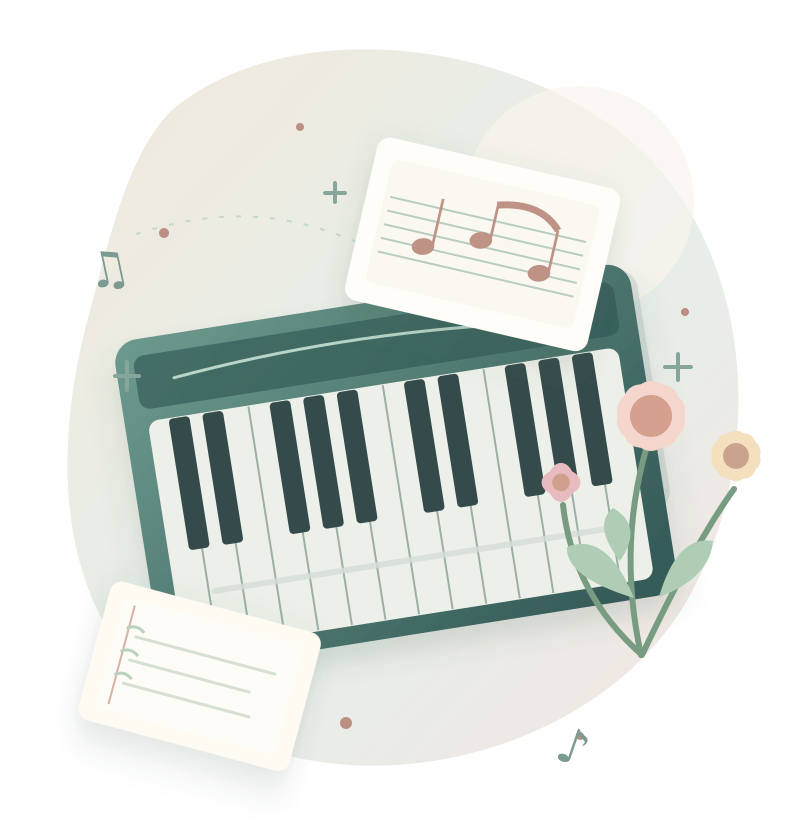

A LITTLE ESSAY FOR PIANO TEACHERS
ピアノを教える、すべての人へ。
「教える」とは何か。
「教えた」と「学んだ」は、
本当に同じ出来事でしょうか。
いつものレッスンに、少しだけ深い問いを。

listen.discover.教えることを、
もう一度、問い直す。
「教える」は日常的な行為です。でも、その本質を突き詰めると、人間の知性、成長、自由、そして他者との関係にまで行き着きます。
最初に、三つの問いを置きたいと思います。
教えたのに、相手が理解していなければ、それは「教えた」と言えるのか。
相手が自分で発見した場合、教えた人の役割は何だったのか。
優れた教師とは、たくさん教える人か。それとも、やがて教える必要がなくなる人か。
この三つは、「教える」という行為の異なる側面を映しています。
CONTENTS
11の視点で、
「教える」を考える。
気になるところから、
自由に読み進めてください。
TEACHING IS NOT LEARNING
「教える」と「学ぶ」は、
同じ出来事ではない。
教師から見ると、教育は情報や方法を相手に伝える行為です。しかし学ぶ側から見ると、教育とは自分の内部に変化が生じる出来事です。この違いは決定的です。
例えば、ピアノの先生がスタッカートの意味を説明し、実演し、手の動きを見せたとします。それでも、生徒が理解したとは限りません。
「音を短くするとは、こういうことなのか」。そう気づき、音の違いを聴き分け、実際に再現できるようになって、初めて学習が成立したと言えます。
説明した ・ 弾いて見せた
動きを伝えた
聴こえ方が変わった
自分で再現できた
先生が説明を終えたことは、学習成立の証明にはなりません。
教育の中心にあるのは、教師が何をしたかではなく、学ぶ人の内部で何が変化したか。
これは本稿の教育観としての整理です。説明や実演の価値を否定するものではありません。学習者が既有知識や経験をもとに理解を構築することは、学習科学の研究でも重視されています。参考文献 ↗
KNOW → UNDERSTAND → USE
知識は渡せる。
理解そのものは、渡せない。
他人の頭の中に知識を直接書き込むことはできません。教師にできるのは、言葉、音、動作、図や表情で、生徒の認識に働きかけることです。
「ドミソは長三和音です」と聞いて、名称を覚えることはできます。でも、響きをまとまりとして聴き、ほかの調でも構造を認識し、頭の中でその音を想像して演奏できるかは別の問題です。
名称や事実を
記憶する
意味・構造・関係を
理解する
別の場面でも
自分で判断する
※ 概念的な整理です。学習は必ずしも左から右への一方通行ではありません。実践から理解が深まることもあります。
さらに、「わかる」と「できる」も同じではありません。美しいフレーズを聴き取れても弾けないことがあり、指が正確に動いていても音楽的な理解が十分とは限りません。
音楽を教えるとは、知識・聴覚的認識・身体技能・表現意図をつないでいく営みではないでしょうか。
SEE THE INVISIBLE
生徒の「見えない世界」を
想像する。
教師には見えているものが、生徒には見えない。教師に聴こえる音が、生徒には聴こえない。教師には簡単でも、生徒にはとても難しい。
その非対称性をどこまで理解できるかが、教師の専門性の核心の一つだと考えます。同じ場所で何度も間違える生徒に、「もっと練習してきなさい」と言う前に考えたいことがあります。
いつも止まってしまう
まず原因を見立てることで、必要な声かけや練習方法が変わります。
同じ「弾けない」でも、内部で起きていることは違うのです。医学で症状と原因を区別するように、教師にも学習者の状態を見立てる力が求められます。
教師の本領は、正解を知っていることだけでなく、なぜ相手がそこに到達できないのかを探ることにあります。
THE PARADOX OF HELPING
教えすぎると、
学ぶ力を奪うことがある。
教師は生徒を成長させるために教えます。でも、先回りしてすべてを教えると、生徒が自分で考える機会を失うことがあります。
演奏中に「そこは強く」「次は弱く」「もっとゆっくり」と指示が続けば、その場では上手に弾けるかもしれません。けれども、先生がいなくなった途端、判断できないとしたらどうでしょう。
「そこはもっと強く」
「次は弱く」
「今はゆっくり」
「今の演奏で、
どこが気になった？」
「どんな音にしたい？」
もちろん、質問すれば必ず良い授業になるわけではありません。判断材料をまだ持たない初心者には、わかりやすい実演や説明が必要です。
適切な指導は「教えるか、考えさせるか」の二者択一ではありません。生徒の状態によって、支援の量と種類を変えることです。自分の学習を振り返り調整するメタ認知・自己調整学習の重要性も研究で指摘されています。
TODAY'S SUCCESS ≠ LASTING SKILL
「できた」と、
「できるようになった」は違う。
先生が横で拍を取り、一緒に歌い、手本を示している間は弾ける。でも、一人になると崩れてしまう。そんな場面は珍しくありません。
これは必ずしも授業の失敗ではなく、自立へ向かう途中段階かもしれません。大切なのは、その成功を何として評価しているかです。
先生と一緒ならできる
一人でもできる
別の曲や場面でも使える
※ 評価のための概念モデル。「転移」は学んだことを別の状況で活用することです。
今日のレッスンで、生徒が次に一人でできることは、何が増えただろう？
目の前で上手に弾けたかだけでなく、来週もできるか、別の曲にも応用できるか。学習の転移は、理解を考える重要な観点です。
WHAT MAKES US WANT TO LEARN?
「学びたい」という気持ちは、
どこから生まれる？
教育には、知識や技術だけでは解決できないことがあります。それが「学びたい」という意欲です。
自己決定理論では、動機づけに関わる基本的心理欲求として「自律性・有能感・関係性」の三つが重視されています。
自律性
自分で選んでいる「弾かされる」ではなく、
「この曲を弾きたい」。
有能感
自分にもできる昨日できなかったことが、
今日できたと実感する。
関係性
受け入れられている自分の音に耳を傾けてもらい、
安心して失敗できる。
教師は意欲を外から注ぎ込むというより、学びたい気持ちが育ちやすい条件を整える、と考えることができます。
ただし「楽しいことだけ」が教育ではありません。練習には退屈さも失敗もあります。その時間に意味を見出せるよう支えることも、教師の大切な役割でしょう。
CAN WE TEACH SENSITIVITY?
音楽には、
「教えられないもの」がある？
正確な音高、リズム、指使い、楽典は、比較的明確に説明できます。では、音楽の美しさ、緊張感、解放感、表現の必然性はどうでしょう。
「もっと悲しい感じで弾いて」と伝えても、生徒が同じ悲しさを感じるとは限りません。「悲しい」という言葉から思い浮かべる響きも、人によって違うからです。
答えや方法へ
導く教育
楽譜の読み方、拍子の取り方、身体の使い方。手がかりを明確に示せるもの。
感じ方や判断を
育てる教育
フレーズを聴き比べ、どちらに心が動いたか、その理由を探ること。
後者では、一つの「正解」を提示するのが常に最善とは限りません。かといって「好きに弾けばいい」と放任することとも違います。
学習者の感性を尊重しながら、まだ気づいていない表現の可能性を示す。感性そのものを渡すのではなく、感性が働く世界を豊かにする。そんな役割が教師にはあるのだと思います。
THE POWER OF A TEACHER'S WORDS
教えるという行為には、
「力」がある。
教師は生徒より多くの知識と経験を持ち、正誤を判定し評価する立場にあります。そのため、一つひとつの言葉には大きな影響力があります。
「あなたは音感が悪い」「あなたには才能がある」。どちらも、状況によっては生徒の自己認識に長く影響するかもしれません。
教師の理想がコンクール入賞であっても、生徒にとって音楽の価値は、好きな曲を気持ちよく弾くことかもしれません。
教師には、導く責任がある。
けれど、生徒の人生の目的まで
決める権利があるわけではない。
教師が専門性を発揮することと、生徒の人生を自分の理想どおりに形づくることは違います。だからこそ「この指導は誰のためのものか」と、問い続ける必要があります。
WHAT A GREAT TEACHER LEAVES BEHIND
最高の教師は、
何を残すのか。
二人の先生を想像してみてください。A先生は間違いをその都度直し、完成度の高い演奏へ導きます。B先生は生徒が自分で間違いを聴き取り、原因を考え、練習方法を選べるよう支えます。
短期的にはA先生の生徒が見事な演奏をするかもしれません。長い目で見れば、B先生の生徒は一人で学び続けられる可能性があります。もちろん、これは思考実験です。現実の教師は両方の役割を担います。
教師の価値を、生徒がそのもとにいる間の成果だけで測ってよいのでしょうか。
教師から離れたあとも、その生徒の中に音楽への好奇心と学び続ける力が残るなら、教育はレッスンという時間を超えて、人生に作用していると言えるでしょう。
THE TEACHER IS ALSO LEARNING
教えるとは、
教師自身が学ぶことでもある。
自分には当たり前にできることを、生徒がなぜできないのか。その理由を説明しようとして初めて、自分が無意識にしていた高度な判断に気づくことがあります。
例えば絶対音感のある教師には、音高の認識が自然かもしれません。しかし、その感覚を持たない生徒へ音の違いを伝えるには、自分の知覚を言葉や手順に分け、別の道筋を探す必要があります。
生徒の反応によって、教師の想定が覆されることもあります。教えることは一方通行ではなく、教師もまた生徒との相互作用によって変化するのです。
自分の教え方を、いつでも問い直せること。
FIVE ROLES OF TEACHING
「教える」を形づくる、
5つの働き。
ここまでの考察をもとに、「教える」には五つの異なる働きがあると整理します。これは本稿独自の枠組みであり、特定の教育理論をそのまま引用したものではありません。
知識・技能・方法を提示する
理解や困難の原因を把握する
到達できる次の一歩をつくる
気づきと判断を促す
教師なしでも学べるようにする
「伝える」だけなら説明に終わり、「引き出す」だけでは必要な知識が不足するかもしれません。「手放す」ことを意識しなければ、教師への依存が続く可能性もあります。
生徒の成長に応じて、この五つの働きの組み合わせは変わっていく。その柔軟さこそが「教える」の奥行きなのだと思います。
THE ESSENCE OF TEACHING
教えるとは、
その人の内側に起こる
変化を支えること。
他者が自分の力で世界を理解し、働きかけられるようになるために、その人の内側の変化を支える行為である。
教師の最終的な目的は、自分の知識をすべて移すことではありません。生徒が、自分自身で学ぶ力を獲得することです。
音楽教育なら、先生がいなくても楽譜を読み、音を聴き、演奏を工夫し、音楽を楽しみ続けられるようになること。
人は体系的に教えられなくても多くを学びます。それでも、自然な学びだけでは見つけにくい世界へ誰かが導くことにも、教育の価値があるのでしょう。
ONE LAST QUESTION
音楽は教えることができる。
では、音楽を感じる力そのものは、
どこまで教えられるのだろう？
音感、内的聴覚、表現力、感性、そして教師の存在意義へ。
この問いに、簡単な正解はありません。
FURTHER READING
参考にした研究・考え方
研究の知見と、筆者独自の考察・提案を区別して構成しています。図版は理解を助けるための概念図であり、実験結果や統計データを表すものではありません。
- 01National Research Council (2000), How People Learn — Learning and Transfer
既有知識・理解の構築、学習の転移、メタ認知。
- 02National Academies (2018), How People Learn II — Processes That Support Learning
自己調整、メタ認知、学習を支える認知的過程。
- 03National Research Council (2005), How Students Learn
先行概念、知識の体系化と、学習を自己管理する視点。
- 04Self-Determination Theory — Theory Overview
自律性・有能感・関係性という基本的心理欲求。